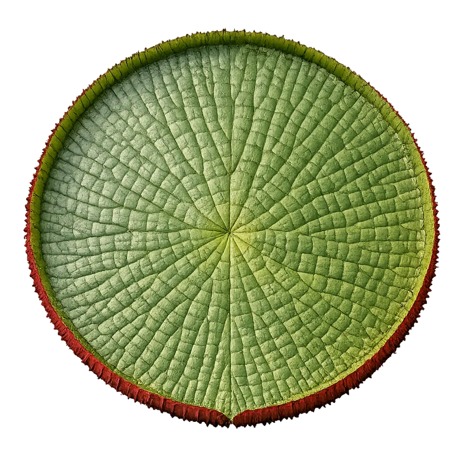

Perfil público
Seu nome, seus produtos e sua região à vista de compradores de todo o Brasil.

Vitrine do Peixe — pescado amazônico B2B
Quem produz aparece. Quem compra encontra. Sem comissão e sem atravessador.
O problema
Tem produtor amazônico com peixe de qualidade e nenhum comprador fora da própria região. E tem comprador procurando fornecedor confiável sem saber por onde começar.
A Vitrine nasceu para fechar essa distância. Ela faz parte do projeto Bússola do Peixe Amazônico, uma startup nascida na Amazônia: um lugar onde quem produz aparece e quem compra encontra.
Rastreabilidade e procedência direto da Amazônia, do rio ao seu negócio.
Produtor e comprador conversam sem intermediário desnecessário no meio.
Cadeias produtivas locais mais fortes e uma economia amazônica sustentável.
O que você pode esperar
A Bússola não cobra nada sobre as suas vendas.
Cada perfil passa por verificação antes de aparecer na plataforma.
Cadastro e acesso gratuitos para produtores e compradores.
Cadastro gratuito para produtores
Muitos produtores vendem só para quem já conhecem. Não é falta de produto, é falta de alcance. Na Vitrine você tem um perfil público com seus produtos, sua região e seus contatos, e compradores de todo o Brasil falam direto com você.
A Bússola não entra na negociação nem cobra comissão. O acordo é entre você e o comprador.
Seu nome, seus produtos e sua região à vista de compradores de todo o Brasil.
O comprador fala com você. Sem formulário longo, sem intermediário.
A Bússola não cobra nada sobre as suas vendas. O que você negocia é seu.
Um perfil verificado passa mais confiança a quem compra pela primeira vez.
Acesso gratuito para compradores
Busque produtores por espécie, região ou volume disponível e fale direto com quem produz. Sem taxas, sem intermediação, sem surpresa. A Bússola conecta as duas pontas e a negociação acontece entre vocês.
Filtre por tipo de peixe, localização e disponibilidade para achar o que você precisa.
Todo perfil passa por verificação antes de aparecer na plataforma.
Fale com o produtor e acerte os detalhes sem passar por terceiros.
Acesse espécies nativas, como o pirarucu, que raramente chegam pelos canais convencionais.
Para a indústria
A Vitrine também é canal para indústrias que querem se aproximar de quem produz na Amazônia. Encontre produtores, negocie volume e anuncie seus produtos e promoções para um público que já é do setor.
Negocie direto com quem produz, sem atravessadores.
Divulgue seus produtos para um público segmentado no setor pesqueiro amazônico.
Lance ofertas e campanhas sazonais dentro da própria Vitrine.
Veja o que está disponível na produção amazônica e planeje sua demanda.
Como funciona
O cadastro é gratuito e leva poucos minutos. Escolha seu perfil e veja os passos.
Acesse a plataforma e escolha o perfil de Produtor. O cadastro é gratuito.
Informe sua localização, as espécies que você produz e os volumes disponíveis.
Nossa equipe valida seu perfil antes de ele aparecer para os compradores.
Compradores interessados falam direto com você para negociar.
Acesse a plataforma e escolha o perfil de Comprador. O acesso é gratuito.
Filtre por espécie, região ou volume disponível até achar o que precisa.
Abra o perfil do produtor e comece a conversa direto com ele.
Preço, volume e logística são combinados entre você e o produtor.
Apresente sua empresa e entenda as opções disponíveis para a indústria.
Busque fornecedores por espécie, região e volume, como no perfil de comprador.
Configure anúncios e promoções para aparecer a quem usa a Vitrine.
O contato com os produtores é direto. A Bússola não intermedia nem cobra comissão.
Dúvidas frequentes
Nada. O cadastro e o acesso são gratuitos para produtores e compradores.
Não. A Bússola não entra na negociação nem cobra comissão. Preço, volume e logística são combinados entre você e a outra parte.
Todo perfil passa por verificação da nossa equipe antes de aparecer na plataforma. Depois do primeiro contato, a conversa e o acordo são entre vocês.
Você cria a conta e escolhe o seu perfil. Todo cadastro passa por aprovação da nossa equipe antes do primeiro acesso à plataforma.
Produtores e piscicultores, compradores e indústrias que atuam com pescado amazônico.
Não. A Vitrine conecta as duas pontas e a negociação acontece direto entre vocês, do jeito que funciona melhor para os dois.
É grátis, leva poucos minutos e ninguém cobra comissão sobre o que você vender.